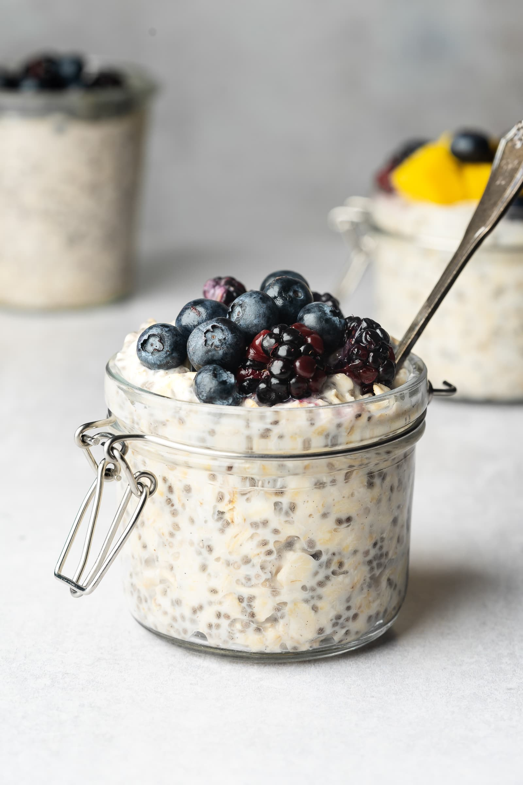

Home
overnight oats recipe

Overnight oats are the perfect make-ahead breakfast that’ll keep you full until lunch.
These are the ingredients you’ll need to make this homemade overnight oats with yogurt:
- milk: Use cow’s milk, oat milk, almond milk, or whatever milk alternative you prefer.
- Yogurt: Greek yogurt lends richness, flavor, and lots of protein to help you take on the day.
- Oats: Make sure to use rolled oats.
- Honey: Honey lends subtle sweetness.
- Chia seeds: Fiber-rich chia seeds add flavor and nutrition.
- Cinnamon: Enhance the overall flavor with ground cinnamon.
- Berries: Choose fresh, plump, vibrant berries.
How to Make Overnight Oats With Greek Yogurt
- Combine all the ingredients (besides the fruit) in a jar, seal, and shake.
- Open the jar and fold in the fruit.
- Seal the jar and refrigerate overnight.